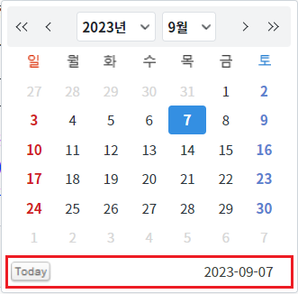
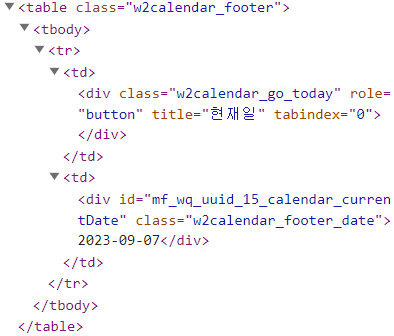
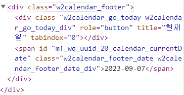
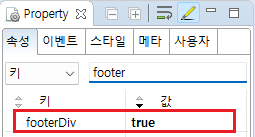

[InputCalendar] 브라우저에 랜더링할 때, 달력의 하단 영역을 태그 'div' 또는 'table'로 구성하기
1개요
InputCalendar의 속성 'footerDiv'의 설정 값에 따른 기능을 비교하는 예제입니다. 이 속성은 화면의 달력 아이콘 클릭 시 생성되는 달력의 하단 영역에 대한 설정입니다.(달력의 하단 영역에는 오늘 날짜를 선택할 수 있는 버튼과 선택된 날짜 문자열이 출력됩니다.) 하단 영역을 브라우저에 랜더링할 때 'Div' 태그로 생성할지에 대한 설정으로, 기본 태그는 'Table'입니다.
설정 값에 따른 구성은 다음과 같습니다.
true: 태그 'Div'로 구성합니다.
false: [default] 태그 'Table'로 구성합니다.
2구현된 기능
달력의 하단 영역을 태그 'table'로 구성하기
달력의 하단 영역을 태그 'div'로 구성하기
3예제 테스트 방법
3.1달력의 하단 영역을 태그 'table'로 구성하기
STEP 1. 달력 아이콘을 클릭합니다.
예제 영역 [(기본 설정 값) 달력의 하단 영역을 태그 'table'로 구성하기]에 구성된 InputCalendar의 달력 아이콘을 클릭합니다.그림 1.브라우저(Chrome) 실행 예시

STEP 2. 실행된 결과를 확인합니다.
달력의 하단 영역( 오늘 날짜를 선택할 수 있는 버튼과 선택된 날짜 문자열이 출력)을 브라우저 개발자 도구의 Elements(요소)탭을 통해 확인합니다. 하단 영역이 'table'로 구성된 것을 확인할 수 있습니다.
그림 2.브라우저(Chrome) 실행 예시 - 달력의 하단 영역 확인

브라우저에 랜더링된 HTML 구조
<table class="w2calendar_footer"> <tbody> <tr> <td> <div class="w2calendar_go_today" role="button" title="현재일" tabindex="0"></div> </td> <td> <div id="mf_wq_uuid_15_calendar_currentDate" class="w2calendar_footer_date">2023-09-07</div> </td> </tr> </tbody> </table>
그림 3.브라우저(Chrome) 개발자 도구의 Elements 예시

3.2달력의 하단 영역을 태그 'div'로 구성하기
STEP 1. 달력 아이콘을 클릭합니다.
예제 영역 [달력의 하단 영역을 태그 'div'로 구성하기]에 구성된 InputCalendar의 달력 아이콘을 클릭합니다.그림 4.브라우저(Chrome) 실행 예시

STEP 2. 실행된 결과를 확인합니다.
달력의 하단 영역( 오늘 날짜를 선택할 수 있는 버튼과 선택된 날짜 문자열이 출력)을 브라우저 개발자 도구의 Elements(요소)탭을 통해 확인합니다. 하단 영역이 'div'로 구성된 것을 확인할 수 있습니다.
그림 5.브라우저(Chrome) 실행 예시 - 달력의 하단 영역 확인
브라우저에 랜더링된 HTML 구조
<div class="w2calendar_footer"> <div class="w2calendar_go_today w2calendar_go_today_div" role="button" title="현재일" tabindex="0"></div><span id="mf_wq_uuid_20_calendar_currentDate" class="w2calendar_footer_date w2calendar_footer_date_div">2023-09-07</span> </div>
그림 6.브라우저(Chrome) 개발자 도구의 Elements 예시

4구현 예시
4.1달력의 하단 영역을 태그 'div'로 구성하기
InputCalendar의 속성을 정의합니다.
[필수] footerDiv="true"
(옵션 설명)
- true: 달력의 하단 영역을 태그 'Div'로 구성합니다.
- false: [default] 달력의 하단 영역을 태그 'Table'로 구성합니다.
그림 7.웹스퀘어5 SP5 스튜디오의 Property View(속성창) 예시

[소스 코드 예시]
<!-- inputCalendar 의 소스 본문 예시 --> <w2:inputCalendar footerDiv="true"> </w2:inputCalendar>
5주요 API
footerDiv
6참고 문서
[웹스퀘어5 SP5 개발 가이드] InputCalendar
링크 : https://docs1.inswave.com/sp5_user_guide/8df43d1f59fab704#579244ff7483b50c